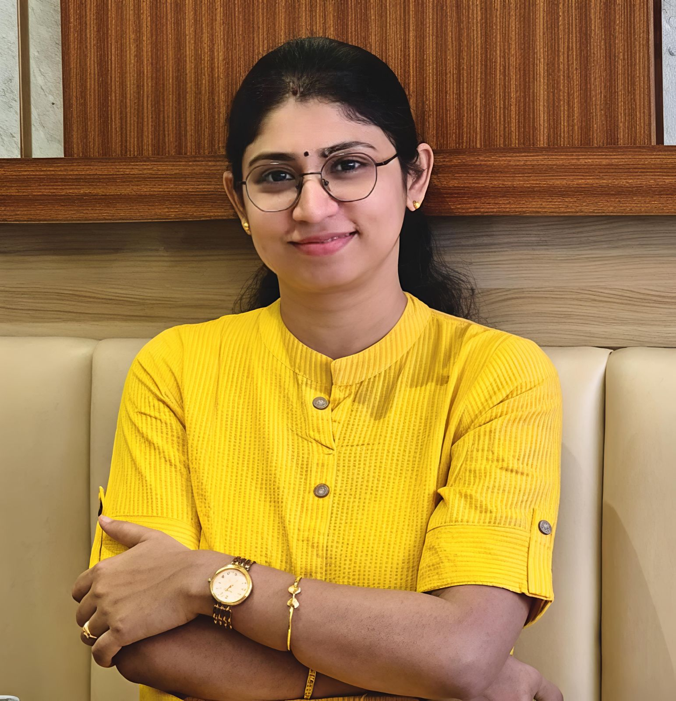

Academic profile · Indian Statistical Institute
Sumana
Ghosh
Assistant Professor · Electronics and Communication Sciences Unit
Computer and Communication Sciences Division
Indian Statistical Institute (ISI) Kolkata

Formal and Cyber-Physical Systems Lab
FCPS · Room No. 707· ISI Kolkata
FCPS · Room No. 707· ISI Kolkata
01 · Profile
About
Hi! I completed my Ph.D in 2019 from the department of Computer Science and Engineering at IIT Kharagpur under the supervision of Prof. Pallab Dasgupta and Prof. Soumyajit Dey. After that, I did my postdoctoral research at the department of Electrical and Computer Engineering at the Technical University of Munich under the supervision of Prof. Samarjit Chakraborty. I joined ISI Kolkata in January 2022.
I am looking for research students with interests in cyber-physical systems, embedded systems, and formal methods.
I am looking for research students with interests in cyber-physical systems, embedded systems, and formal methods.
OFFICE ADDRESS
Room No. 918
9th Floor, ECSU
S.N. Bose Building, ISI Kolkata
9th Floor, ECSU
S.N. Bose Building, ISI Kolkata
RESEARCH LAB
Formal and Cyber-Physical Systems Lab (FCPS)
Room No. 707, S.N. Bose Building
03 · Background
Education
- 2019: Doctor of Philosophy (Ph.D.) from Dept. of Computer Science and Engg., Indian Institute of Technology Kharagpur
- 2012: M.Sc. in Computer and Information Science from University of Calcutta
- 2010: B.Sc. in Computer Science from University of Calcutta
- 2007: Higher Secondary (Class XII Board Exam) Board: West Bengal Council Higher Secondary Education
- 2005: Madhyamik (Class X Board Exam) Board: West Bengal Board of Secondary Education
04 · Scholarly work
Publications
2026
Conference
- Subhajit Paul, Ansuman Banerjee, Sumana Ghosh, Sudhakar Surendran, Raj Kumar Gajavelly
SuperSAGA : A Supervisor-Subordinate Agentic workflow for the Generation of Assertions
In Asia and South Pacific Design Automation Conference (ASPDAC), 2026, pp. 420-425, DOI:10.1109/ASP-DAC66049.2026.11420235. - Soumik Guha Roy, Sumana Ghosh, Ansuman Banerjee, Raj Kumar Gajavelly, Surendran Sudhakar
MPBMC: Multi-Property Bounded Model Checking with GNN-guided Clustering
In IEEE International Conference on VLSI Design (VLSID), Jan. 2026, pp. 179-184, India, DOI:10.1109 /VLSID68508.2026.00045
2025
Journal
- Debarpita Banerjee, Parasara Sridhar Duggirala, Bineet Ghosh, Sumana Ghosh
A Formal Approach towards Safe and Stable Schedule Synthesis in Weakly Hard Control Systems
ACM Transactions on Embedded Computing Systems, Volume 24, No. 5, Article 148, Sept 2025, DOI:10.1145/3760528.
Presented in the International Conference on Embedded Software (EMSOFT) 2025. - Debarpita Banerjee, Sumana Ghosh
P2SDS: A Polynomial-Time Pattern-Guided Stable Dynamic Scheduling for Weakly Hard Control Task Systems
ACM Transactions on Embedded Computing Systems, Volume 24, No. 5, Article 83, Sept 2025, DOI:10.1145/3748329.
Conference
- Subhajit Paul, Ansuman Banerjee, Sumana Ghosh, Sudhakar Surendran, Raj Kumar Gajavelly
LISA: LLM Informed Systemverilog Assertion generation with RAG and Chain-of-Thought
In IEEE Computer Society Annual Symposium on VLSI (ISVLSI), Greece, 2025, pp. 1-6, DOI: 10.1109/ISVLSI65124.2025.11130226 - Soumik Guha Roy, Adriz Chanda, Prateek Ganguli, Sumana Ghosh, Ansuman Banerjee, Raj Kumar Gajavelly, Surendran Sudhakar
BMC Engine Sequencing with Graph Neural Network Embeddings of Hardware Circuits
In IEEE International Conference on VLSI Design (VLSID), Jan. 2025, pp. 163-168, India, DOI: 10.1109/VLSID64188.2025.00041.
2024
Journal
- Harikishan T S, Sumana Ghosh, Debasmita Lohar
Towards Precision-Aware Safe Neural-Controlled Cyber-Physical Systems
IEEE Embedded System Letters (IEEE-ESL), Volume 16, No. 4, pp. 397-400, Dec. 2024, DOI:10.1109/LES.2024.3444004.
Presented in the International Conference on Embedded Software (EMSOFT) 2024. - Sunandan Adhikary, Ipsita Koley, Saurav Kumar Ghosh, Sumana Ghosh, Soumyajit Dey
Revisiting Dynamic Scheduling of Control Tasks: A Performance-aware Fine-grained Approach
IEEE Transactions on Computer-Aided Design of Integrated Circuits and Systems (IEEE-TCAD), Volume 43, No. 11, pp. 3662-3673, Nov 2024, DOI: 10.1109/TCAD.2024.3443007.2024.
Presented in the International Conference on Embedded Software (EMSOFT) 2024. - Danny Pereria, Sumana Ghosh, Soumyajit Dey
Multi-Stream Scheduling of Real-Time Tasks on Edge Devices - a DRL Approach
ACM Transaction on Design Automation of Electronic Systems (ACM-TODAES), Volume 29, No. 6, Article 94, Nov 2024, 36 pages, DOI:10.1145/36773782024. - Devleena Ghosh, Sumana Ghosh, Ansuman Banerjee, Raj Kumar Gajavelly, Surendran Sudhakar
MAB-BMC: An Formal Verification Enhancer Harnessing Multiple BMC Engines Together
ACM Transaction on Design Automation of Electronic Systems (ACM-TODAES), Volume 29, No. 5, Article 75, Aug 2024, 37 pages, DOI:10.1145/3675168.
Conference
- Arkaprava Gupta, Sumana Ghosh, Ansuman Banerjee, Swarup Kr. Mohalik
Configuring Safe Spiking Neural Controllers for Cyber-Physical Systems through Formal Verification
In ACM-IEEE International Symposium on Formal Methods and Models for System Design (MEMOCODE), Oct. 2024, pp. 103-107, DOI: 10.1109/MEMOCODE63347.2024.00017. The full version of the paper is available here. - Debanjan Mallik, Sumana Ghosh
An Efficient Neural Network Controller for Autonomous Lane-Keeping Assist System
In IEEE International Conference on VLSI Design (VLSID), Jan. 2024, pp. 360-365, DOI: 10.1109/VLSID60093.2024.00066. - Danny Pereria, Sumana Ghosh, Soumyajit Dey
DRL-based Scheduling of Real-Time Tasks on Edge Devices
In IEEE International Conference on VLSI Design (VLSID), Jan. 2024, pp. 324-329, DOI: 10.1109/VLSID60093.2024.00060.
2023
Journal
- Danny Pereria, Anirban Ghose, Sumana Ghosh, Soumyajit Dey
Inferencing on Edge Devices: a Time and Space Aware Co-scheduling Approach
ACM Transaction on Design Automation of Electronic Systems (ACM-TODAES), Volume 28, No. 3, Article 38, Mar 2023, DOI:10.1145/3576197.
Conference
- Devleena Ghosh, Sumana Ghosh, Raj Kumar Gajavelly, Ansuman Banerjee
Harnessing Multiple BMC Engines together for Efficient Formal Verification
In ACM-IEEE International Symposium on Formal Methods and Models for System Design (MEMOCODE), Sept. 2023, pp. 71-81, DOI: 10.1145/3610579.3611083 [Best Paper Award Nominee] - Soham Banerjee, Arkaprava Gupta, Sumana Ghosh, Ansuman Banerjee, Swarup Kr. Mohalik,
A Test Generation Approach for Spiking Neural Network Simplification
In International Symposium on VLSI Design and Test (VDAT), Lecture Notes in Electrical Engineering, Vol. 1210, pp. 343-356, 2023, DOI: 10.1007/978-981-97-3756-7_26. - Soham Banerjee, Sumana Ghosh, Ansuman Banerjee, Swarup Kr. Mohalik,
An SMT toolbox for Adversarial Robustness Evaluation of Spiking Neural Networks
In International Conference on Computational Technologies and Electronics (ICCTE), 2023, Vol 2377, pp. 82-93, India, DOI:10.1007/978-3-031-81981-0_8. - Sumana Ghosh
Delay-aware Control for Autonomous Systems
In IEEE International Conference on VLSI Design (VLSID), Jan. 2023, pp. 1-6, DOI: 10.1109/VLSID57277.2023.00018. - Soham Banerjee, Sumana Ghosh, Ansuman Banerjee, Swarup Kr. Mohalik
SMT-Based Modeling and Verification of Spiking Neural Networks: A Case Study
In International Conference on Verification, Model Checking, and Abstract Interpretation (VMCAI), Jan. 2023, pp. 25-43, DOI: 10.1007/978-3-031-24950-1_2.
2021
Conference
- Sumana Ghosh, Arnab Mondal, Debayan Roy, Philipp H. Kindt, Soumyajit Dey, Samarjit Chakraborty
Proactive Feedback for Networked CPS
In ACM/SIGAPP Symposium on Applied Computing (SAC), Mar. 2021, pp. 164-173, DOI: 10.1145/3412841.3441897.
2020
Journal
- Sumana Ghosh, Arnab Mondal, Philipp H. Kindt, Prateek Sharma, Yash Agarwal, Soumyajit
Dey, Alok Kanti Deb, Samarjit Chakraborty
A Programmable Open Architecture Testbed for CPS Education
IEEE Design & Test Magazine (IEEE-D&T), Volume 37, No. 6, pp: 31-38, Jul. 2020, DOI: 10.1109/MDAT.2020.3006798. - Sumana Ghosh, Soumyajit Dey, Pallab Dasgupta
Performance driven Post Processing of Control Loop Execution Schedules
ACM Transactions on Design Automation of Electronic Systems (ACM-TODAES), Volume 26, No. 2, Article 13, Oct. 2020, DOI: 10.1145/3421505. - Sumana Ghosh, Soumyajit Dey, Pallab Dasgupta
Pattern Guided Integrated Scheduling and Routing in Multihop Control Networks
ACM Transaction on Embedded Computing Systems (ACM-TECS), Volume:19, No: 2, Article: 9, Feb. 2020, DOI: 10.1145/3372134
Conference
- Debayan Roy, Sumana Ghosh, Qi Zhu, Marco Caccamo, Samarjit Chakraborty
GoodSpread:Criticality-Aware Static Scheduling of CPS with Multi-QoS Resources
In IEEE Real-Time Systems Symposium (RTSS), Dec. 2020, pp. 178-190, DOI:10.1109/RTSS49844.2020.00026. - Sunandan Adhikary, Ipsita Koley, Saurav Kr. Ghosh, Sumana Ghosh, Soumyajit Dey, Debdeep Mukhopadhyay
Skip to Secure: Securing Cyber-physical Control Loops with Intentionally Skipped Executions
In CCS pre-conference Joint Workshop on CPS&IoT Security and Privacy (CPSIOTSEC), Nov. 2020, pp. 81-86, DOI: 10.1145/3411498.3419966. - Philipp H. Kindt, Sumana Ghosh, Samarjit Chakraborty
Configuring Loosely Time-Triggered Wireless Control Software
In ACM International Workshop on Software and Compilers for Embedded Systems (SCOPES), May 2020, pp. 70-73, DOI:10.1145/3378678.339188.
2019
Journal
- Sumana Ghosh, Soumyajit Dey, Pallab Dasgupta
Performance and Energy Aware Robust Specification of Control Execution Patterns under Dropped Samples
IET Computers & Digital Techniques(CDT), Volume: 13, Issue: 6, pp: 493–504(11), Nov 2019, DOI: 10.1049/iet-cdt.2019.0030.
Conference
- Sumana Ghosh, Soumyajit Dey and Pallab Dasgupta
Synthesizing Performance-aware (m,k)-firm Control Execution Patterns under Dropped Samples
In International Conference on Embedded and VLSI Design, pp. 1-6, Jan. 2019, DOI:10.1109/VLSID.2019.00019.
Best Paper Award Nominee and won Honorable Mention Award
2017
Journal
- Sumana Ghosh, Soumyajit Dey and Pallab Dasgupta
Co-synthesis of Loop Execution Patterns for Multi-Hop Control Networks
IEEE Embedded System Letters, Volume: 10, Issue 4, pp 111-114, December 2018, DOI:10.1109/LES.2017.2777506. - Sumana Ghosh, Souradeep Dutta, Soumyajit Dey and Pallab Dasgupta
A Structured Methodology for Pattern-based Adaptive Scheduling in Embedded Control
ACM Transactions on Embedded Computing Systems, Volume: 16, No: 5s, Article: 189, pp 1-22, September 2017, DOI:10.1145/31265.
Presented in the International Conference on Embedded Software (EMSOFT) 2017.
2015
Conference
- Sumana Ghosh and Pallab Dasgupta
Formal Method for Pattern Based Reliability Analysis in Embedded System
In International Conference on Embedded and VLSI Design, pp. 192-197, Jan. 2015, DOI:10.1109/VLSID.2015.38.
05 · Research portfolio
Projects
Ongoing Research Projects
- Title: On-demand Compute Management using Formal Methods (funded by Ericsson Research India) [2024-2027]
Completed Research Projects
- Title: Machine Learning and Formal Verification Joining Hands (funded by Semiconductor Research Corporation, USA) [2022-2025]
- Title: A Cross-Layer Approach for Designing Secure Cyber-Physical Systems (funded by ISI Kolkata) [2023-2026]
06 · Supervision
Research Students
Current Research Students
- Debarpita Banerjee [2023- ]
Research Topic: Efficient Scheduling for Safe and Secure Cyber-Physical Systems - Soumik Guha Roy [2023- ]
Research Topic: Machine Learning for Formal Verification in Electronics Design Automation
- Swagata Paul
Research Topic: Formal Verification for Anomaly Detection in Open-RAN - Samik Acharya
Research Topic: Formal Methods for Designing Secure Cyber-Physical Systems
Graduate Students
- Danny Pereira (jointly with Prof. Soumyajit Dey, CSE, IIT Kharagpur) [2022-2025]
Thesis Title: Efficient Scheduling of Object Detection Pipelines on Embedded GPGPUs
- Harikishan T S [2023-2024]
Thesis Title: Safety Verification of Neural Network Controlled Cyber-Physical Systems under Precision Errors
07 · Teaching
Teaching Experience
- Instructor for the following courses:
- Digital Design and Computer Architecture for MTech. CS and CrS, Autumn 2026s.
- Automata Theory, Languages, and Computation for MTech. CS at ISI Kolkata, Spring 2026.
- Computer Organization for MTech. CS, Autumn 2024.
- Automata Theory, Languages, and Computation for MTech. CS at ISI Kolkata, Spring 2024.
- Computer Organization for MTech. CS, Autumn 2023.
- Automata Theory, Languages, and Computation for MTech. CS at ISI Kolkata, Spring 2023.
- Computing Lab for MTech. CS at ISI Kolkata, Autumn 2022.
- Automata Theory, Languages, and Computation for MTech. CrS at ISI Kolkata, Autumn 2022.
- Embedded Control Systems Laboratory at Technical University of Munich, Autumn 2020.
- Teaching Assistantships for the following courses at IIT Kharagpur :
- Formal Languages and Automata Theory (CS21004; Spring 2018, 2017, 2014)
- Computational Foundation of Cyber-physical Systems (CS61063; Autumn 2017)
- Programming & Data Structures Lab (CS19001; Autumn 2016, 2015, Spring 2013)
- Database Management Systems (CS43002; Spring 2016, 2015)
- Advanced Graph Theory (CS60047; Autumn 2014)
- Foundations of Computing Science (CS60001; Autumn 2013)
- Introduction to Algorithm Design course in a programme named "Train 10,000 Teachers (T10kT)", under the project ’Empowerment of Students/Teachers’, sponsored by the National Mission on Education through ICT (MHRD, Government of India), 2015.
- Guest Lecturer at Asutosh College, Affiliated to University of Calcutta
Taught Digital Design and Object Oriented Programming during the period of June 2012 to November 2012.
08 · Career
Professional Experience
- Invited talk, entitled “Applying Formals Beyond the Traditional HW/SW Design Verification”, at the FWFE meet organized by Qualcomm India, Dec. 2024.
- Invited talk, entitled “Research on Formal Methods and Beyond”, at the Global meet by Ericsson Research, Nov. 2024.
- Presented “Harnessing Multiple BMC Engines Together for Efficient Formal Verification”, at the ACM-IEEE MEMOCODE Conference, Sept. 2023, held in Hamburg, Germany.
- Invited talk, entitled “Formal Approach for Efficient Design of Cyber-Physical Systems”, at the University of Bremen, Germany, Sept. 2022.
- Presented "Machine Learning and Formal Verification joining hands", at the SRC Annual Meet, Feb. 2023, virtually held in the USA.
- Presented "Delay-Aware Control for Autonomous Systems", at the IEEE VLSID Conference, Jan. 2023, held at Hyderabad, India.
- Invited talk, entitled "Formal Methods for Robust Design of Cyber-Physical Systems”, at SAG(DRDO) on August 2022, under the course on ”Formal Methods for Security Assurance", held in Delhi, India.
- Invited talk, entitled "Formal Verification of Machine Learning and Its application in Cyber-Physical Systems”, at Narula Institute of Technology on July 2022, conducted under the "Science Popularization Programme" and sponsored by DSTBT, Govt. of West Bengal.
- Invited talk, entitled "Formal Methods for Real–Time Cyber-Physical Systems", at the Conference on Information Technology in Defence (ITD) 2022, March 2022, held in Bangalore, India.
- Presented “Proactive Feedback for Networked CPS”, at the ACM/SIGAPP Symposium on Applied Computing (SAC), March 2021, Virtual Event, held at the Republic of Korea.
- Presented “A Formal Approach towards Pattern Guided Scheduling in Embedded Control Systems”, at the PhD Forum of Design, Automation and Test in Europe (DATE) Conference, 2020, held at Grenoble, France.
- Presented “Synthesizing Performance-aware (m,k)-firm Control Execution Patterns under Dropped Samples”, at the IEEE VLSID Conference, January 2019, held in New Delhi, India.
- Worked as Research Consultant in the project FMSAFE: A Networked Centre for Formal Methods in Validation and Certification Procedures for Safety Critical ICT Systems, sponsored by MHRD and Ministry of Railways, for a period of January 2018 to January 2019.
- Presented "A Structured Methodology for Pattern-based Adaptive Scheduling in Embedded Control", at the ACM SIGBED International Conference on Embedded Software (EMSOFT), October 2017, held at Seoul, South Korea.
- Delivered a talk on “Formal Methods for Verification of Real-Time Embedded Control ”, at the Indo-Israel Workshop, February 2016, held at IIT Kharagpur.
- Worked as Research Consultant in the project AUTOSAFE: Architecture-aware Timing Analysis and Optimization of Safety-Critical Automotive Software, sponsored by Indo-German Science and Technology Center (IGSTC), from July 2014 to December 2015.
- Delivered a talk on “An Algorithmic Bridge from Adaptive Sampling to Automata-based Scheduling for Embedded Control”, at the Indo-German Workshop, December 2015, held at IIT Kharagpur.
- Presented "Formal Methods for Pattern Based Reliability Analysis in Embedded Systems", at the IEEE VLSID Conference, January 2015, held in Bangalore, India.
09 · Recognition
Honors and Awards
- Received the Outstanding Women Researcher Award by Springer Nature in India, under the category "Her Research Our Future", 2025.
- Awarded SERB-National Postdoctoral Fellowship (N-PDF) 2021 by the Government of India for a tenure of 2 years.
- Awarded Prestigious DAAD-PRIME (Postdoctoral Researchers International Mobility Experience) Fellowship 2019 by German Academic Exchange Service (DAAD) for a tenure of 1.5 years. Selected as one of the 2 candidates who have been awarded this fellowship in the ’Engineering’ category worldwide in that year.
- Received Honorable Mention Award in VLSID Conference 2019.
- Awarded Research Fellowship by Ministry of Human Resource Development (MHRD) for a tenure of 5 years (2013-2018).
- Qualified UGC NET (University Grants Commission - National Eligibility Test) with Junior Research Fellowship award in Computer Science and Application, December 2012.
- The prestigious Mamraj Agarwal National Award and University Gold Medal for standing First in the M.Sc Exam, 2012.
- M.Sc (Computer and Information Science), 1st Class First (Rank-1), University of Calcutta, 2012.
- Qualified GATE (Graduate Aptitude Test in Engineering) in Computer Science in 2012 with a percentile of 99.27.